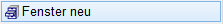
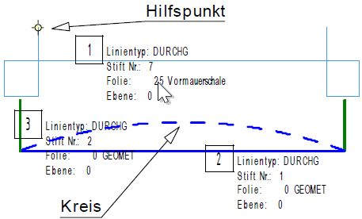
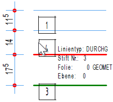
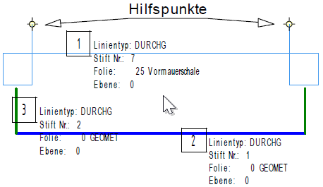
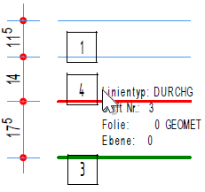

")
")
Einlesen eines Fenstermakros. Die Einstellung der aktuellen Folie ist ohne Bedeutung, da die Linien so wie im Ursprung festgelegt, eingeordnet werden. Gegebenenfalls werden nicht vorhandene Folien automatisch angelegt.
Öffnet den Dialog Fenster lesen_Zeichnung mit Fenster einlesen.
Um ein Fenstermakro zu erzeugen
Ein Fenstermakro ist ein wiederverwendbares Objekt, das Sie selbst definieren und in jede Zeichnung einfügen können. Benutzen Sie für das Erstellen von Fenstermakros denselben Strichtyp und dieselbe Stiftnummer wie die Wandlinien, um vorhandene Wandlinien nach dem Einfügen des Fenstermakros im Grundriss zu löschen. Ansonsten bleiben die Wandlinien nach dem Einfügen des Fenstermakros erhalten. Die Funktion entspricht [Konst1 | Kopier → ÜlaAn].
Eine zulässige Zeichnung besteht ausschließlich
·aus Linien,
·enthält exakt zwei gegenüberliegende Hilfspunkte
·und ist horizontal ausgerichtet.
Nicht zulässige Zeichnung |
|
|---|---|
 |
 |
Fenstermakro |
vorhandene Wandlinien |
Zulässige Zeichnung |
|
|---|---|
 |
 |
Fenstermakro |
vorhandene Wandlinien |
§Zeichnen Sie den Grundriss der Öffnung z. B. mit der Funktion [Konst1 | Linien].
Sie können das Fenstermakro in einer beliebigen Zeichnung erstellen. Wenn Sie das Makro gespeichert haben, können Sie es aus der Zeichnung wieder entfernen.
§Fügen Sie zwei Hilfspunkte ein, die sich gegenüberliegen. [Untere Menüleiste | HiP] oder [Konst1 | HilfPu].
Der erste Hilfspunkt entspricht dem Einfügepunkt und der zweite der variablen Fensterbreite.
§Ziehen Sie einen Rahmen um die Öffnung auf und speichern Sie die Datei ab. [Datei | Auslag].
Die Teilzeichnung wird gespeichert und kann in die Zeichnung eingefügt werden.
Um ein Fenstermakro einzufügen
§Wählen Sie die gewünschte Zeichnung im Format *.akt aus und klicken Sie auf Öffnen.
Die gewählte Zeichnung wird geöffnet und im Funktionsbereich im Vorschaufenster angezeigt. Wenn Sie eine nicht zulässige Zeichnung aufrufen, wird Ihnen das in einer Meldung angezeigt.
§Um die Fensterlänge zu bestimmen, klicken Sie im Funktionsbereich auf die Schaltfläche [Länge ...].
Der Dialog Fenster wird geöffnet.
§Geben Sie im Dialog die gewünschte Fensterlänge in Metern ein und bestätigen Sie mit OK.
Der Dialog wird geschlossen. Im Vorschaufenster werden die Linien und einer der beiden Hilfspunkte als "Einfügepunkt" angezeigt.
§Mit den Funktionen [Klappe] und [PuWech] können Sie die Ausrichtung und Lage des Einfügepunktes bestimmen.
Im Vorschaufenster |
Klappe |
PuWech (Punkt wechseln) |
|---|---|---|
|
Spiegelt die Öffnung. |
Wechselt den Punkt auf die gegenüberliegenden Seite. |
|
|
|
Das Klappen und Wechseln des Punktes können Sie beliebig kombinieren. Um ggf. eine Korrektur zu vermeiden, geben Sie die Ausrichtung vor der Abfrage [Abstand] an. |
||


§Klicken Sie die Linie an, auf der die nicht sichtbaren Hilfspunkte liegen sollen. [auf welche Linie].
Im Vorschaubereich wird das Fenstermakro in dem Winkel angezeigt, der aus der angeklickten Linie ermittelt wurde. Der Maßstab wird ebenfalls aus der Bezugslinie übernommen.
§Klicken Sie einen Punkt (Orientierungspunkt) an, von dem der Abstand gemessen werden soll. [von welchem Punkt].
§Geben Sie den Abstand zum Orientierungspunkt ein und bestätigen Sie mit der Eingabetaste. [Abstand].
Das Fenstermakro wird eingefügt.

Beispiel 1
Beispiel 2
Beispiel 3
|
||||||||||||||||||||||||